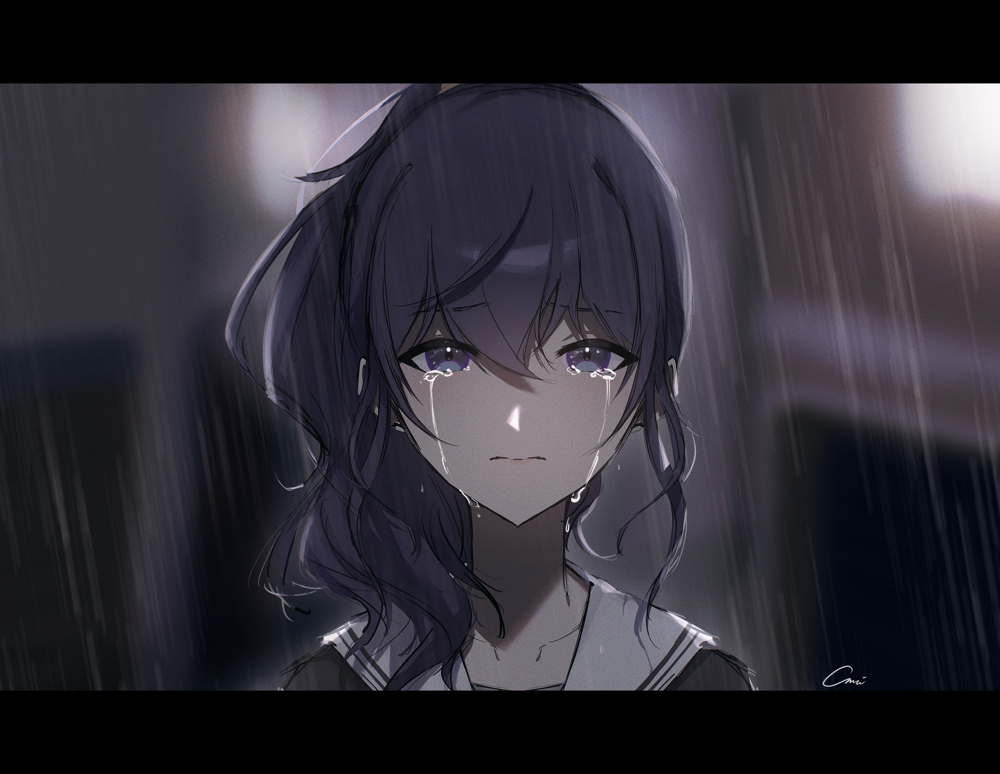

The Tune Played On That Day
Project information
- Teacher: Mhea Laurence V. Nierre
In the art classroom, Arisa stood still with her painting before her—a landscape that was meant to be full of life. But Mr. Sato’s words cut through the silence, sharp and unforgiving. “This isn’t art; it’s just paint on a canvas. Where’s the feeling? Where’s the story?” His voice boomed, making Arisa’s heart sink. She could feel her classmates’ eyes on her as they whispered. As Mr. Sato’s harsh words hung in the air, Arisa thought about her father, lying in a hospital bed. She remembered the critics at his last show, their words as sharp as Mr. Sato’s, and the sinking feeling that it was her suggestions that had led him there. Even when she ran away from home to forget what happened, she felt like the past was still following her.
At lunch, Arisa heard the whispers about Ohirume Kuro, also known as “Miss Perfect,” who got top marks and got into a famous school. Arisa wondered what it was like to be so perfect. Following a sad piano tune, filled with longing and yet warm, Arisa found Ohirume in the music room. The rain tapped on the windows, but inside, it was just them and the music. Ohirume looked like a goddess, and Arisa felt a rush of warmth and wonder. It was like seeing someone who stood out without even trying. Arisa, who always doubted herself, was amazed by Ohirume’s talent.
As they started spending time together, Arisa realized that Ohirume’s perfection was a facade. She was just trying to meet everyone’s high expectations. Arisa wanted to get to know the real Ohirume, the girl behind the perfect image. Little by little, as they hung out, Arisa noticed the small things that showed Ohirume’s true feelings. The way her laughter seemed forced, the sadness in her eyes, and the smiles that didn’t seem genuine. Their friendship grew stronger, and Arisa learned about Ohirume's struggles. Ohirume's mom was against her playing music, seeing it as a distraction from her studies. The synthesizer, which should have been Ohirume's escape, had become a symbol of her quiet rebellion against her mother's wishes.
After school, Ohirume’s home was quiet, too quiet. When her mother found the synthesizer, her voice was cold and hard. “What is this doing here?” she asked, her eyes narrow. “This is what I love doing, Mom,” Ohirume replied, her voice was small, her hands clasped together as if she could hold onto the music that was about to be taken from her. “Music? This is a waste of time!” her mother snapped. She grabbed the synthesizer, and she threw it to the ground. The sound of breaking plastic and snapping wires filled the room. Keys scattered across the floor, some cracked, others completely shattered, their once smooth surfaces now broken. Ohirume stood frozen, the pieces of her synthesizer spread out before her. Her mother’s footsteps echoed as she walked away, leaving Ohirume in the silence.
The days that passed were a blur for Ohirume. She moved through them like a ghost, her eyes empty. She ignored Arisa’s texts, her calls, her worried glances in the hallway. The music that had once filled her with joy was now just a memory, and without it, the world seemed colorless. Arisa couldn’t stand seeing her friend like this. She remembered her own escape, the time she ran away from home, from the guilt and sadness. She knew what it was like to feel lost.
One day, she waited for Ohirume after school. “Let’s go to the coffee shop,” she said, her voice gentle but serious. “Please.” They sat in their usual spot, the smell of coffee and chocolate around them, but the sweetness couldn’t touch the bitterness in Ohirume’s heart. They went to the arcade, where they used to laugh, but now the laughter just echoed around Ohirume, a reminder of what she’d lost. As they walked home, the rain continued to fall and Ohirume finally shared with Arisa what had happened, her voice shaking. “My mom… she broke my synthesizer,” she said, the words caught in her throat. “It was my escape, the only thing that made me feel… me. And now it’s gone.”
Arisa stopped and looked at Ohirume, her heart aching for her friend. She wrapped her arms around Ohirume in a tight hug. “I once ran away when I was filled with guilt and the world just… seemed to be my enemy. Ohirume… It’s okay to run away… for a little while,” Arisa whispered. “It might seem like a coward’s advice, but we all get tired. You can’t keep pushing when everything feels too much. You’re not alone. I’m here, and I’ll always stay by your side.” As they parted ways, Ohirume looked up at the sky, letting the raindrops gently fall on her face, and gave Arisa a small, hopeful smile—a sign that maybe just maybe things would get better.
